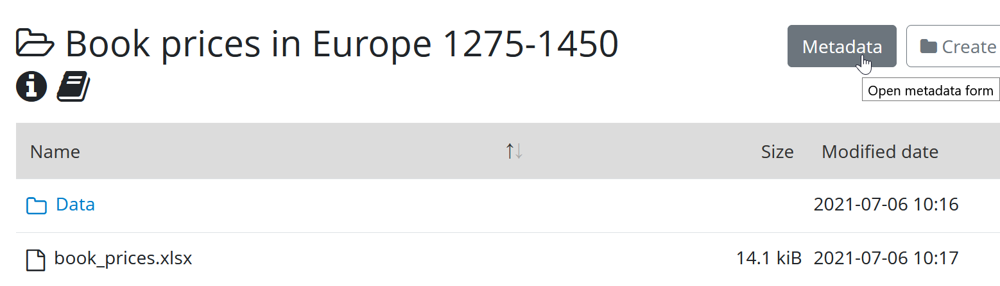
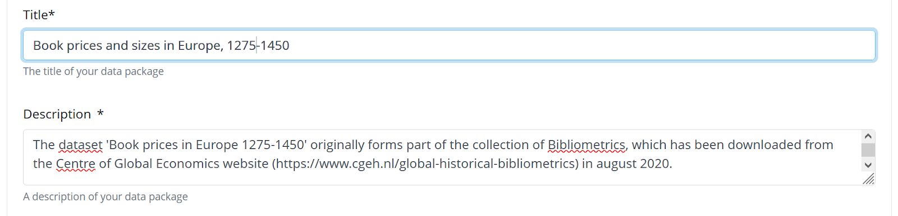
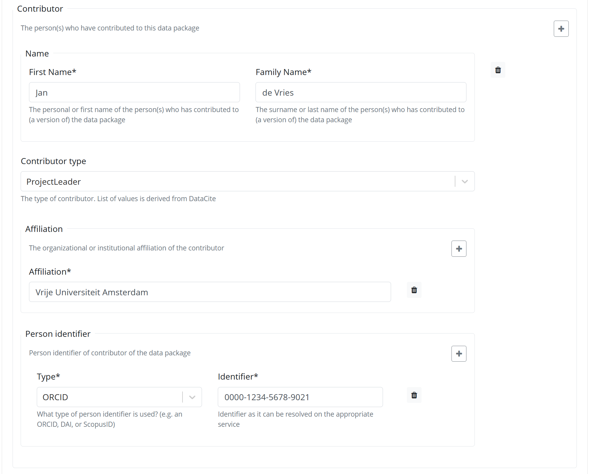
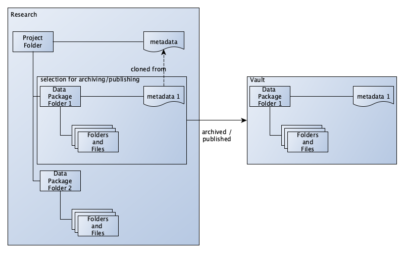

Adding Metadata
This page provides guidance on how to add metadata to your datasets in Yoda.
Metadata in Yoda
Metadata is “data about data”. Metadata serves multiple purposes in Yoda, the most important being:
- To describe the contents of a dataset for a broad audience.
- To inform the audience whether the data can be reused and if so, under what conditions.
- To prescribe how the data should be cited and whom to acknowledge.
- To inform digital archivists and IT staff about how long the data should be retained.
- To facilitate finding the dataset in data catalogues.
We distinguish two types of metadata:
Structured metadata consists of information that is standardized globally and used by data catalogs. Examples are the title of the data package, its creator, the retention period of the package, etc.
When a data package is published, Yoda makes the structured metadata available for harvesting by data catalogs, such as DataCite.
Unstructured metadata is intended to provide more detailed information about the data. This information can be in a README.TXT or other file that is included as part of the data package. The format of this file is chosen by the researcher. Users will need to open and inspect the data package to find this metadata. Unstructured metadata can include information about (for example) the experimental design, data transformation, sampling method, etc.
Adding metadata in Yoda
Yoda facilitates adding both structured and unstructured metadata to your research data. Entering structured metadata is a prerequisite for archiving a data package. If a folder is published, its structured metadata will be published as well and can be harvested by data catalogs such as DataCite. Your published datasets can also be registered in Pure.
In order to add structured metadata to a folder, navigate to the folder in the Yoda portal and press the “Metadata” button.

Once you have added metadata and clicked on the “Save” button, the metadata will be stored in a specific format in the folder. Yoda uses files named “yoda-metadata.json” for this purpose.
Unstructured metadata can be added as a file to the dataset, for example in a “Readme.txt” or “Codebook.pdf” file.
The metadata form
By default, the Yoda metadata form consists of approximately 30 fields. Please consult the metadata element list below for a detailed description of the elements.
All mandatory fields are marked with an asterisk.

Some metadata elements consist of multiple fields. For example, if you enter a person identifier, you should also specify the type of identifier. 
Some fields can have multiple values. In order to add a value, press the “+” sign next to the field.
Reusing metadata
Structured metadata is reusable. The metadata form includes a button “Clone from parent folder”. One way to use this feature is to create a project-level folder with several subfolders for data. Common metadata elements for the project can be entered in the project-level folder. This metadata can then be copied to the data folders and filled in further.
You can also copy the “yoda-metadata.json” file of a folder to another folder in order to copy its metadata.
When you publish a folder, only the metadata on the level of that folder is published in data catalogs.

Properties and explanations
M Mandatory
R Recommended for optimal findability
O Optional
| No | Property | Obligation | Explanation | Remarks |
|---|---|---|---|---|
| 1 | Title | M | A descriptive title for your data package, should not be longer than about 200 characters. | |
| 2 | Description | M | Describe your data package, e.g. the subject, the sample size, methodology, etc. It is best to keep this description concise. More elaborate documentation should be added in a text file called README. | The text should be substantial and relevant to interpreting the content of the data package |
| 3 | Discipline | M | The (sub)discipline of the study. | The list contains a combination of research disciplines and subdisciplines. The standard used is the OECD FOS 2007. This field can have multiple values — use the plus sign to add more values. |
| 4 | Version | O | Version number of your data package. Useful if you need to publish an updated version of your data package later. | Yoda does not automatically assign version numbers to data packages. If you create multiple versions, you can register the version number yourself, according to your own versioning scheme. |
| 5 | Language of the data | M | The primary language of your data package. | This element is thought of as a possible aid to assess the usability of a data package for a specific person. The standard used is ISO 639/1. |
| 6a | Collection Process - Start Date | R | Indicate when you’ve started collecting the data for this data package. | Clicking on the field reveals a calendar you can use to pick the date. |
| 6b | Collection Process - End Date | M if 6a | Indicate when you’ve finished collecting the data for this data package. | Clicking on the field reveals a calendar you can use to pick the date. |
| 7 | Location(s) covered | R | If your data is linked to particular locations provide place names. | English naming convention preferred. It is recommended to use the preferred spelling from the Getty Thesaurus of Geographic Names whenever possible. One location per line. This field can have multiple values — use the plus sign to add more values. Maximum length: 255 characters. |
| 8a | Period Covered - Start period | O | An indication of the start date of the period covered by your data package. | Clicking on the field reveals a calendar you can use to pick the date. |
| 8b | Period Covered - End Period | M if 8a | An indication of the end date of the period covered by your data package. | Clicking on the field reveals a calendar you can use to pick the date. |
| 9 | Keywords | M | Free text field for adding (searchable) keywords to your data package. | You can choose the keywords freely. It is best to add only one keyword per line. This field can have multiple values — use the plus sign to add more values. Maximum length: 255 characters. |
| 10a | Related Data package - Relation type | R | The way in which the present data package (A) is related to another data package (B). | In this section you can enter a ‘related’ data package and the nature of that relation. For instance, you can indicate that the current data package (A) contains the raw data upon which the related data package (B) is based by selecting IsSourceOf in this field and entering the information of the other data package in the fields below. You can have multiple Related data packages — use the plus sign to add more values. |
| 10b | Related Data package - Title | R If 10a | Title of the data package related to the present data package. | There is no automatic check whether title and persistent identifier match. Maximum length: 255 characters. |
| 10c | Related Data package – Identifier type | M If 10d | The type of the persistent identifier of the related data package. | Example: “DOI”. |
| 10d | Related Data package – Identifier | R If 10a | The persistent identifier of the related data package. | Please fill in a resolvable URL. Example: “https://doi.org/10.48338/VU01-2LT5V4”. |
| 11 | Retention Period | M | The minimal number of years the data will be kept in the archive. The default value is 10 years. | In this field you can only enter integers. |
| 12 | Retention Information | O | To be used for remarks about the retention period. | Please provide a reason if you deviate from the default value of ten years. If you want to ensure that data is retained longer, then data management might request extra care for choosing sustainable file formats. |
| 13 | Embargo enddate | O | If the dataset has an embargo, on what date does the embargo end? | This functionality is not yet fully implemented. Please contact the data manager if you intend to publish a data package with an embargo. |
| 14 | Data type | M | Please indicate the type of the data. | If no type is selected Yoda will assume “Datapackage”. |
| 15 | Data Classification | M | Please indicate the classification of the data. Translation to VU Classifications: Public=Low, Basic=Medium, Sensitive=High, Critical=Very High. | You can find more information about data classification in the Research Support Handbook. |
| 16 | Name of Collection | O | If this data package is part of a larger (conceptual) collection of data packages, you can enter the collection name here. | The research group should ensure that all other data packages in the collection are archived with the same collection name. Maximum length: 255 characters. |
| 17a | Funding information - Funder | O | The name(s) of the organization(s) funding the research. If using this property also add the Award Number. | Example: “Dutch Research Council”. It is recommended to use the preferred spelling from the Research Organization Registry (ROR). This field can have multiple values — use the plus sign to add more values. Maximum length: 255 characters. |
| 17b | Funding information - Award number | R if 17a | The grant number issued by the funding organization | |
| 18 | Remarks | O | Remarks from the datamanager. | Remarks serve only an administrative purpose and are not shown outside of the back-end of Yoda. |
| 19a | Creator of Data package - Name | M | The main researchers involved in producing the data, in priority order. | A creator is explicitely listed as an author when the data package is cited. A creator is equivalent to a manuscript author. This field can have multiple values — use the plus sign to add more values. Maximum length: 255 characters. |
| 19b | Creator of Data package – Affiliation name | M | The organizational or institutional affiliation of the creator. | Example: “Vrije Universiteit Amsterdam”. It is recommended to use the preferred spelling from the Research Organization Registry (ROR). The affiliation of the creator of a data package could be of importance when it is unclear who owns the data. In general the organization to which the creator was affiliated is regarded as the owner. Each creator can have multiple affiliations — use the plus sign to add more values. Most research institutes should be in the list and the ROR identifier will automatically filled. If the institution is not in the list, use the Find button, you can leave the ROR field empty in case the institute does not have a ROR. Maximum length: 255 characters. |
| 19c | Creator of Data package – Affiliation identifier | R | The organizational or institutional identifier of the creator. | It is recommended to use the resolvable URL from the Research Organization Registry (ROR). Example: “https://ror.org/008xxew50” for “Vrije Universiteit Amsterdam”. |
| 19d | Creator of Data package – Persistent Identifier: Type | M if 19e | Please indicate the type of persistent person identifier. | E.g. Scopus Author ID, ORCID or ResearcherID. Multiple values are possible. If available, enter at least an ORCID. |
| 19e | Creator of Data package – Persistent Identifier: Identifier | R | The Persistent Identifier. | If you are not sure whether someone has a persistent identifier, you can check with the big three providers: Scopus Author ID, ORCID,ResearcherID. Each creator can have multiple persistent identifier — use the plus sign to add more values. Maximum length: 255 characters. Please fill in a resolvable URL. The pattern of an ORCID, ResearchID and ISNI is validated. There is no check if the name and identifier match. |
| 20a | Contributor to Data Package - Name | R | The institution or person responsible for collecting, managing, distributing, or otherwise contributing to the development of the resource. For software, if there is an alternate entity that “holds, archives, publishes, prints, distributes, releases, issues, or produces” the code, use the contributor Type “hostingInstitution” for the code repository. |
Contributors are not listed as creators when the data package is cited. Contributors are analogous to co-creators that would appear in the Acknowledgements-section of a manuscript. Multiple values possible — use the plus sign to add more values. Maximum length: 255 characters. |
| 20b | Contributor to Data Package - Type | R if 20a | Enter what type of contribution the registered person has had to this data package. | See the datacite documentation for explanation. |
| 20c | Contributor to Data Package - Affiliation name | M if 20a | The organizational or institutional affiliation of the contributor. | Example: “Vrije Universiteit Amsterdam”. The affiliation of the creator of a data package could be of importance when it is unclear who owns the data. In general the organization to which the creator was affiliated is regarded as the owner. Each creator can have multiple affiliations — use the plus sign to add more values. Most research institutes should be in the list and the ROR identifier will automatically filled. If the institution is not in the list, use the Find button, you can leave the ROR field empty in case the institute does not have a ROR. Maximum length: 255 characters. |
| 20d | Contributor to Data Package - Affiliation identifier | R | The organizational or institutional identifier of the contributor. | It is recommended to use the resolvable URL from the Research Organization Registry (ROR). Example:“https://ror.org/008xxew50” for “Vrije Universiteit Amsterdam”. |
| 20e | Contributor to Data Package - Persistent Identifier: Type | M if 20f | Please indicate the type of persistent person identifier. | Each contributor can have multiple persistent identifiers — use the plus sign to add more values. Maximum length: 255 characters. |
| 20f | Contributor to Data Package - Persistent Identifier: Identifier | R | An unique person identifier. | Each contributor can have multiple identifiers — use the plus sign to add more values. Maximum length: 255 characters. Please fill in a resolvable URL. The pattern of an ORCID, ResearchID and ISNI is validated. There is no check if the name and identifier match. |
| 21 | License | M | The license under which you offer the data package for use by third parties. The preferred value for open data is CC By 4.0. | Every package needs to be archived with a license — even when you’re not planning to publish the data or have it reused in any form. We offer a number of possible licenses in a drop-down list. If you do not know which license to choose, contact the data manager. At the moment of publishing a data package the relevant license text will be copied into the data package. If you opt for a custom license, you will need to store the custom license text in a file titled License.txt in the root folder. If the Data Package Access (22) is Restricted Access or Closed Access, you can only opt for a custom license, the VU has created custom templates for the License.txt file. |
| 22 | Data Package Access | M | Once archived, should your dataset be accessible to third parties? | Open Access means that the dataset is accessible to everyone. Restricted Access means that the dataset can only be obtained on request. Closed Access means that the dataset cannot be shared, in principle. |